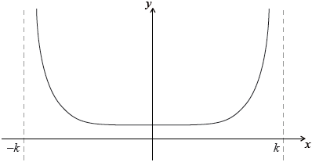

HL Paper 3
Find \(\mathop {\lim }\limits_{x \to 0} \frac{{\tan x}}{{x + {x^2}}}\) ;
Find \(\mathop {\lim }\limits_{x \to 1} \frac{{1 - {x^2} + 2{x^2}\ln x}}{{1 - \sin \frac{{\pi x}}{2}}}\) .
Consider the differential equation
\(\frac{{{\text{d}}y}}{{{\text{d}}x}} = 2{{\text{e}}^x} + y\tan x\) , given that y = 1 when x = 0 .
The domain of the function y is \(\left[ {0,\frac{\pi }{2}} \right[\).
By finding the values of successive derivatives when x = 0 , find the Maclaurin series for y as far as the term in \({x^3}\) .
(i) Differentiate the function \({{\text{e}}^x}(\sin x + \cos x)\) and hence show that
\[\int {{{\text{e}}^x}\cos x{\text{d}}x = \frac{1}{2}{{\text{e}}^x}(\sin x + \cos x) + c} .\]
(ii) Find an integrating factor for the differential equation and hence find the solution in the form \(y = f(x)\) .
(i) Show that \(\int_1^\infty {\frac{1}{{x(x + p)}}{\text{d}}x,{\text{ }}p \ne 0} \) is convergent if p > −1 and find its value in terms of p.
(ii) Hence show that the following series is convergent.
\[\frac{1}{{1 \times 0.5}} + \frac{1}{{2 \times 1.5}} + \frac{1}{{3 \times 2.5}} + ...\]
Determine, for each of the following series, whether it is convergent or divergent.
(i) \(\sum\limits_{n = 1}^\infty {\sin \left( {\frac{1}{{n(n + 3)}}} \right)} \)
(ii) \(\sqrt {\frac{1}{2}} + \sqrt {\frac{1}{6}} + \sqrt {\frac{1}{{12}}} + \sqrt {\frac{1}{{20}}} + …\)
The function f is defined by
\[f(x) = \ln \left( {\frac{1}{{1 - x}}} \right).\]
(a) Write down the value of the constant term in the Maclaurin series for \(f(x)\) .
(b) Find the first three derivatives of \(f(x)\) and hence show that the Maclaurin series for \(f(x)\) up to and including the \({x^3}\) term is \(x + \frac{{{x^2}}}{2} + \frac{{{x^3}}}{3}\).
(c) Use this series to find an approximate value for ln 2 .
(d) Use the Lagrange form of the remainder to find an upper bound for the error in this approximation.
(e) How good is this upper bound as an estimate for the actual error?
The function f is defined on the domain \(\left] { - \frac{\pi }{2},\frac{\pi }{2}} \right[{\text{ by }}f(x) = \ln (1 + \sin x)\) .
Show that \(f''(x) = - \frac{1}{{(1 + \sin x)}}\) .
(i) Find the Maclaurin series for \(f(x)\) up to and including the term in \({x^4}\) .
(ii) Explain briefly why your result shows that f is neither an even function nor an odd function.
Determine the value of \(\mathop {\lim }\limits_{x \to 0} \frac{{\ln (1 + \sin x) - x}}{{{x^2}}}\).
The exponential series is given by \({{\text{e}}^x} = \sum\limits_{n = 0}^\infty {\frac{{{x^n}}}{{n!}}} \) .
Find the set of values of x for which the series is convergent.
(i) Show, by comparison with an appropriate geometric series, that
\[{{\text{e}}^x} - 1 < \frac{{2x}}{{2 - x}},{\text{ for }}0 < x < 2{\text{.}}\]
(ii) Hence show that \({\text{e}} < {\left( {\frac{{2n + 1}}{{2n - 1}}} \right)^n}\), for \(n \in {\mathbb{Z}^ + }\).
(i) Write down the first three terms of the Maclaurin series for \(1 - {{\text{e}}^{ - x}}\) and explain why you are able to state that
\[1 - {{\text{e}}^{ - x}} > x - \frac{{{x^2}}}{2},{\text{ for }}0 < x < 2.\]
(ii) Deduce that \({\text{e}} > {\left( {\frac{{2{n^2}}}{{2{n^2} - 2n + 1}}} \right)^n}\), for \(n \in {\mathbb{Z}^ + }\).
Letting n = 1000, use the results in parts (b) and (c) to calculate the value of e correct to as many decimal places as possible.
Determine whether or not the following series converge.
(a) \(\sum\limits_{n = 0}^\infty {\left( {\sin \frac{{n\pi }}{2} - \sin \frac{{(n + 1)\pi }}{2}} \right)} \)
(b) \(\sum\limits_{n = 1}^\infty {\frac{{{{\text{e}}^n} - 1}}{{{\pi ^n}}}} \)
(c) \(\sum\limits_{n = 2}^\infty {\frac{{\sqrt {n + 1} }}{{n(n - 1)}}} \)
Find \(\mathop {\lim }\limits_{x \to 0} \left( {\frac{{1 - \cos {x^6}}}{{{x^{12}}}}} \right)\).
(a) Given that \(y = \ln \cos x\) , show that the first two non-zero terms of the Maclaurin series for y are \( - \frac{{{x^2}}}{2} - \frac{{{x^4}}}{{12}}\).
(b) Use this series to find an approximation in terms of \(\pi {\text{ for }}\ln 2\) .
Consider the differential equation \(\frac{{{\text{d}}y}}{{{\text{d}}x}} = {x^2} + {y^2}\) where y =1 when x = 0 .
Use Euler’s method with step length 0.1 to find an approximate value of y when x = 0.4.
Write down, giving a reason, whether your approximate value for y is greater than or less than the actual value of y .
Consider the function \(f(x) = \sin (p\arcsin x),{\text{ }} - 1 < x < 1\) and \(p \in \mathbb{R}\).
The function \(f\) and its derivatives satisfy
\((1 - {x^2}){f^{(n + 2)}}(x) - (2n + 1)x{f^{(n + 1)}}(x) + ({p^2} - {n^2}){f^{(n)}}(x) = 0,{\text{ }}n \in \mathbb{N}\)
where \({f^{(n)}}(x)\) denotes the \(n\) th derivative of \(f(x)\) and \({f^{(0)}}(x)\) is \(f(x)\).
Show that \(f’(0) = p\).
Show that \({f^{(n + 2)}}(0) = ({n^2} - {p^2}){f^{(n)}}(0)\).
For \(p \in \mathbb{R}\backslash \{ \pm 1,{\text{ }} \pm 3\} \), show that the Maclaurin series for \(f(x)\), up to and including the \({x^5}\) term, is
\(px + \frac{{p(1 - {p^2})}}{{3!}}{x^3} + \frac{{p(9 - {p^2})(1 - {p^2})}}{{5!}}{x^5}\).
Hence or otherwise, find \(\mathop {\lim }\limits_{x \to 0} \frac{{\sin (p\arcsin x)}}{x}\).
If \(p\) is an odd integer, prove that the Maclaurin series for \(f(x)\) is a polynomial of degree \(p\).
Given that \(n > {\text{ln}}\,n\) for \(n > 0\), use the comparison test to show that the series \(\sum\limits_{n = 0}^\infty {\frac{1}{{{\text{ln}}\left( {n + 2} \right)}}} \) is divergent.
Find the interval of convergence for \(\sum\limits_{n = 0}^\infty {\frac{{{{\left( {3x} \right)}^n}}}{{{\text{ln}}\left( {n + 2} \right)}}} \).
Let the Maclaurin series for \(\tan x\) be
\[\tan x = {a_1}x + {a_3}{x^3} + {a_5}{x^5} + \ldots \]
where \({a_1}\), \({a_3}\) and \({a_5}\) are constants.
Find series for \({\sec ^2}x\), in terms of \({a_1}\), \({a_3}\) and \({a_5}\), up to and including the \({x^4}\) term
by differentiating the above series for \(\tan x\);
Find series for \({\sec ^2}x\), in terms of \({a_1}\), \({a_3}\) and \({a_5}\), up to and including the \({x^4}\) term
by using the relationship \({\sec ^2}x = 1 + {\tan ^2}x\).
Hence, by comparing your two series, determine the values of \({a_1}\), \({a_3}\) and \({a_5}\).
Consider the differential equation \(\frac{{{\text{d}}y}}{{{\text{d}}x}} = \frac{x}{y} - xy\) where \(y > 0\) and \(y = 2\) when \(x = 0\).
Show that putting \(z = {y^2}\) transforms the differential equation into \(\frac{{{\text{d}}z}}{{{\text{d}}x}} + 2xz = 2x\).
By solving this differential equation in \(z\), obtain an expression for \(y\) in terms of \(x\).
Consider the infinite spiral of right angle triangles as shown in the following diagram.

The \(n{\text{th}}\) triangle in the spiral has central angle \({\theta _n}\), hypotenuse of length \({a_n}\) and opposite side of length 1, as shown in the diagram. The first right angle triangle is isosceles with the two equal sides being of length 1.
Consider the series \(\sum\limits_{n = 1}^\infty {{\theta _n}} \).
Using l’Hôpital’s rule, find \(\mathop {\lim }\limits_{x \to \infty } \left( {\frac{{\arcsin \left( {\frac{1}{{\sqrt {(x + 1)} }}} \right)}}{{\frac{1}{{\sqrt x }}}}} \right)\).
(i) Find \({a_1}\) and \({a_2}\) and hence write down an expression for \({a_n}\).
(ii) Show that \({\theta _n} = \arcsin \frac{1}{{\sqrt {(n + 1)} }}\).
Using a suitable test, determine whether this series converges or diverges.
The sequence \(\{ {u_n}\} \) is defined by \({u_n} = \frac{{3n + 2}}{{2n - 1}}\), for \(n \in {\mathbb{Z}^ + }\).
Show that the sequence converges to a limit L , the value of which should be stated.
Find the least value of the integer N such that \(\left| {{u_n} - L} \right| < \varepsilon \) , for all n > N where
(i) \(\varepsilon = 0.1\);
(ii) \(\varepsilon = 0.00001\).
For each of the sequences \(\left\{ {\frac{{{u_n}}}{n}} \right\},{\text{ }}\left\{ {\frac{1}{{2{u_n} - 2}}} \right\}\) and \(\left\{ {{{( - 1)}^n}{u_n}} \right\}\) , determine whether or not it converges.
Prove that the series \(\sum\limits_{n = 1}^\infty {({u_n} - L)} \) diverges.
The function \(f\) is defined by
\[f(x) = \left\{ {\begin{array}{*{20}{l}} {{x^2} - 2,}&{x < 1} \\ {ax + b,}&{x \geqslant 1} \end{array}} \right.\]
where \(a\) and \(b\) are real constants.
Given that both \(f\) and its derivative are continuous at \(x = 1\), find the value of \(a\) and the value of \(b\).
Let \(f(x)\) be a function whose first and second derivatives both exist on the closed interval \([0,{\text{ }}h]\).
Let \(g(x) = f(h) - f(x) - (h - x)f'(x) - \frac{{{{(h - x)}^2}}}{{{h^2}}}\left( {f(h) - f(0) - hf'(0)} \right)\).
State the mean value theorem for a function that is continuous on the closed interval \([a,{\text{ }}b]\) and differentiable on the open interval \(]a,{\text{ }}b[\).
(i) Find \(g(0)\).
(ii) Find \(g(h)\).
(iii) Apply the mean value theorem to the function \(g(x)\) on the closed interval \([0,{\text{ }}h]\) to show that there exists \(c\) in the open interval \(]0,{\text{ }}h[\) such that \(g'(c) = 0\).
(iv) Find \(g'(x)\).
(v) Hence show that \( - (h - c)f''(c) + \frac{{2(h - c)}}{{{h^2}}}\left( {f(h) - f(0) - hf'(0)} \right) = 0\).
(vi) Deduce that \(f(h) = f(0) + hf'(0) + \frac{{{h^2}}}{2}{\text{ }}f''(c)\).
Hence show that, for \(h > 0\)
\(1 - \cos (h) \leqslant \frac{{{h^2}}}{2}\).
Given that \(f(x) = \ln x\), use the mean value theorem to show that, for \(0 < a < b\), \(\frac{{b - a}}{b} < \ln \frac{b}{a} < \frac{{b - a}}{a}\).
Hence show that \(\ln (1.2)\) lies between \(\frac{1}{m}\) and \(\frac{1}{n}\), where \(m\), \(n\) are consecutive positive integers to be determined.
Find the radius of convergence of the series \(\sum\limits_{n = 0}^\infty {\frac{{{{( - 1)}^n}{x^n}}}{{(n + 1){3^n}}}} \).
Determine whether the series \(\sum\limits_{n = 0}^\infty {\left( {\sqrt[3]{{{n^3} + 1}} - n} \right)} \) is convergent or divergent.
Solve the differential equation
\(\frac{{{\text{d}}y}}{{{\text{d}}x}} = \frac{y}{x} + \frac{{{y^2}}}{{{x^2}}}\) (where x > 0 )
given that y = 2 when x = 1 . Give your answer in the form \(y = f(x)\) .
Find the set of values of k for which the improper integral \(\int_2^\infty {\frac{{{\text{d}}x}}{{x{{(\ln x)}^k}}}} \) converges.
Show that the series \(\sum\limits_{r = 2}^\infty {\frac{{{{( - 1)}^r}}}{{r\ln r}}} \) is convergent but not absolutely convergent.
Determine whether the series \(\sum\limits_{n = 1}^\infty {\frac{{{n^{10}}}}{{{{10}^n}}}} \) is convergent or divergent.
![]()
The diagram shows part of the graph of \(y = \frac{1}{{{x^3}}}\) together with line segments parallel to the coordinate axes.
(a) Using the diagram, show that \(\frac{1}{{{4^3}}} + \frac{1}{{{5^3}}} + \frac{1}{{{6^3}}} + ... < \int_3^\infty {\frac{1}{{{x^3}}}{\text{d}}x < \frac{1}{{{3^3}}} + \frac{1}{{{4^3}}} + \frac{1}{{{5^3}}} + ...} \) .
(b) Hence find upper and lower bounds for \(\sum\limits_{n = 1}^\infty {\frac{1}{{{n^3}}}} \).

Figure 1

Figure 2
Figure 1 shows part of the graph of \(y = \frac{1}{x}\) together with line segments parallel to the coordinate axes.
(i) By considering the areas of appropriate rectangles, show that
\[\frac{{2a + 1}}{{a(a + 1)}} < \ln \left( {\frac{{a + 1}}{{a - 1}}} \right) < \frac{{2a - 1}}{{a(a - 1)}}.\]
(ii) Hence find lower and upper bounds for \(\ln (1.2)\).
An improved upper bound can be found by considering Figure 2 which again shows part of the graph of \(y = \frac{1}{x}\).
(i) By considering the areas of appropriate regions, show that
\[\ln \left( {\frac{a}{{a - 1}}} \right) < \frac{{2a - 1}}{{2a(a - 1)}}.\]
(ii) Hence find an upper bound for \(\ln (1.2)\).
The function f is defined by \(f(x) = \left\{ \begin{array}{r}{e^{ - x^3}}( - {x^3} + 2{x^2} + x),x \le 1\\ax + b,x > 1\end{array} \right.\), where \(a\) and \(b\) are constants.
Find the exact values of \(a\) and \(b\) if \(f\) is continuous and differentiable at \(x = 1\).
(i) Use Rolle’s theorem, applied to \(f\), to prove that \(2{x^4} - 4{x^3} - 5{x^2} + 4x + 1 = 0\) has a root in the interval \(\left] { - 1,1} \right[\).
(ii) Hence prove that \(2{x^4} - 4{x^3} - 5{x^2} + 4x + 1 = 0\) has at least two roots in the interval \(\left] { - 1,1} \right[\).
(a) Using the Maclaurin series for \({(1 + x)^n}\), write down and simplify the Maclaurin series approximation for \({(1 - {x^2})^{ - \frac{1}{2}}}\) as far as the term in \({x^4}\)
(b) Use your result to show that a series approximation for arccos x is
\[\arccos x \approx \frac{\pi }{2} - x - \frac{1}{6}{x^3} - \frac{3}{{40}}{x^5}.\]
(c) Evaluate \(\mathop {\lim }\limits_{x \to 0} \frac{{\frac{\pi }{2} - \arccos ({x^2}) - {x^2}}}{{{x^6}}}\).
(d) Use the series approximation for \(\arccos x\) to find an approximate value for
\[\int_0^{0.2} {\arccos \left( {\sqrt x } \right){\text{d}}x} ,\]
giving your answer to 5 decimal places. Does your answer give the actual value of the integral to 5 decimal places?
(a) Using l’Hopital’s Rule, show that \(\mathop {\lim }\limits_{x \to \infty } x{{\text{e}}^{ - x}} = 0\) .
(b) Determine \(\int_0^a {x{{\text{e}}^{ - x}}{\text{d}}x} \) .
(c) Show that the integral \(\int_0^\infty {x{{\text{e}}^{ - x}}{\text{d}}x} \) is convergent and find its value.
By successive differentiation find the first four non-zero terms in the Maclaurin series for \(f(x) = (x + 1)\ln (1 + x) - x\).
Deduce that, for \(n \geqslant 2\), the coefficient of \({x^n}\) in this series is \({( - 1)^n}\frac{1}{{n(n - 1)}}\).
By applying the ratio test, find the radius of convergence for this Maclaurin series.
Find \(\mathop {\lim }\limits_{x \to \frac{1}{2}} \left( {\frac{{\left( {\frac{1}{4} - {x^2}} \right)}}{{\cot \pi x}}} \right)\).
Let \(f(x) = 2x + \left| x \right|\) , \(x \in \mathbb{R}\) .
Prove that f is continuous but not differentiable at the point (0, 0) .
Determine the value of \(\int_{ - a}^a {f(x){\text{d}}x} \) where \(a > 0\) .
Consider the curve \(y = \frac{1}{x},{\text{ }}x > 0\).
Let \({U_n} = \sum\limits_{r = 1}^n {\frac{1}{r} - \ln n} \).
By drawing a diagram and considering the area of a suitable region under the curve, show that for \(r > 0\),
\[\frac{1}{{r + 1}} < \ln \left( {\frac{{r + 1}}{r}} \right) < \frac{1}{r}.\]
Hence, given that \(n\) is a positive integer greater than one, show that
\(\sum\limits_{r = 1}^n {\frac{1}{r} > \ln (1 + n)} \);
Hence, given that \(n\) is a positive integer greater than one, show that
\(\sum\limits_{r = 1}^n {\frac{1}{r} < 1 + \ln n} \).
Hence, given that \(n\) is a positive integer greater than one, show that
\({U_n} > 0\);
Hence, given that \(n\) is a positive integer greater than one, show that
\({U_{n + 1}} < {U_n}\).
Explain why these two results prove that \(\{ {U_n}\} \) is a convergent sequence.
Find the value of \(\mathop {\lim }\limits_{x \to 1} \left( {\frac{{\ln x}}{{\sin 2\pi x}}} \right)\).
By using the series expansions for \({{\text{e}}^{{x^2}}}\) and cos x evaluate \(\mathop {\lim }\limits_{x \to 0} \left( {\frac{{1 - {{\text{e}}^{{x^2}}}}}{{1 - \cos x}}} \right).\).
A curve that passes through the point (1, 2) is defined by the differential equation
\[\frac{{{\text{d}}y}}{{{\text{d}}x}} = 2x(1 + {x^2} - y){\text{ }}.\]
(a) (i) Use Euler’s method to get an approximate value of y when x = 1.3 , taking steps of 0.1. Show intermediate steps to four decimal places in a table.
(ii) How can a more accurate answer be obtained using Euler’s method?
(b) Solve the differential equation giving your answer in the form y = f(x) .
The variables x and y are related by \(\frac{{{\text{d}}y}}{{{\text{d}}x}} - y\tan x = \cos x\) .
(a) Find the Maclaurin series for y up to and including the term in \({x^2}\) given that
\(y = - \frac{\pi }{2}\) when x = 0 .
(b) Solve the differential equation given that y = 0 when \(x = \pi \) . Give the solution in the form \(y = f(x)\) .
Consider the differential equation \(x\frac{{{\text{d}}y}}{{{\text{d}}x}} - y = {x^p} + 1\) where \(x \in \mathbb{R},\,x \ne 0\) and \(p\) is a positive integer, \(p > 1\).
Solve the differential equation given that \(y = - 1\) when \(x = 1\). Give your answer in the form \(y = f\left( x \right)\).
Show that the \(x\)-coordinate(s) of the points on the curve \(y = f\left( x \right)\) where \(\frac{{{\text{d}}y}}{{{\text{d}}x}} = 0\) satisfy the equation \({x^{p - 1}} = \frac{1}{p}\).
Deduce the set of values for \(p\) such that there are two points on the curve \(y = f\left( x \right)\) where \(\frac{{{\text{d}}y}}{{{\text{d}}x}} = 0\). Give a reason for your answer.
Use the limit comparison test to prove that \(\sum\limits_{n = 1}^\infty {\frac{1}{{n(n + 1)}}} \) converges.
Using the Maclaurin series for \(\ln (1 + x)\) , show that the Maclaurin series for \(\left( {1 + x} \right)\ln \left( {1 + x} \right)\) is \(x + \sum\limits_{n = 1}^\infty {\frac{{{{( - 1)}^{n + 1}}{x^{n + 1}}}}{{n(n + 1)}}} \).
In this question you may assume that \(\arctan x\) is continuous and differentiable for \(x \in \mathbb{R}\).
Consider the infinite geometric series
\[1 - {x^2} + {x^4} - {x^6} + \ldots \;\;\;\left| x \right| < 1.\]
Show that the sum of the series is \(\frac{1}{{1 + {x^2}}}\).
Hence show that an expansion of \(\arctan x\) is \(\arctan x = x - \frac{{{x^3}}}{3} + \frac{{{x^5}}}{5} - \frac{{{x^7}}}{7} + \ldots \)
\(f\) is a continuous function defined on \([a,{\text{ }}b]\) and differentiable on \(]a,{\text{ }}b[\) with \(f'(x) > 0\) on \(]a,{\text{ }}b[\).
Use the mean value theorem to prove that for any \(x,{\text{ }}y \in [a,{\text{ }}b]\), if \(y > x\) then \(f(y) > f(x)\).
(i) Given \(g(x) = x - \arctan x\), prove that \(g'(x) > 0\), for \(x > 0\).
(ii) Use the result from part (c) to prove that \(\arctan x < x\), for \(x > 0\).
Use the result from part (c) to prove that \(\arctan x > x - \frac{{{x^3}}}{3}\), for \(x > 0\).
Hence show that \(\frac{{16}}{{3\sqrt 3 }} < \pi < \frac{6}{{\sqrt 3 }}\).
Consider the differential equation \(\frac{{{\text{d}}y}}{{{\text{d}}x}} + \left( {\frac{{2x}}{{1 + {x^2}}}} \right)y = {x^2}\), given that \(y = 2\) when \(x = 0\).
Show that \(1 + {x^2}\) is an integrating factor for this differential equation.
Hence solve this differential equation. Give the answer in the form \(y = f(x)\).
Consider the function \(f(x) = \frac{1}{{1 + {x^2}}},{\text{ }}x \in \mathbb{R}\).
Illustrate graphically the inequality, \(\frac{1}{5}\sum\limits_{r = 1}^5 {f\left( {\frac{r}{5}} \right) < \int_0^1 {f(x){\text{d}}x < \frac{1}{5}\sum\limits_{r = 0}^4 {f\left( {\frac{r}{5}} \right)} } } \).
Use the inequality in part (a) to find a lower and upper bound for \(\pi \).
Show that \(\sum\limits_{r = 0}^{n - 1} {{{( - 1)}^r}{x^{2r}} = \frac{{1 + {{( - 1)}^{n - 1}}{x^{2n}}}}{{1 + {x^2}}}} \).
Hence show that \(\pi = 4\left( {\sum\limits_{r = 0}^{n - 1} {\frac{{{{( - 1)}^r}}}{{2r + 1}} - {{( - 1)}^{n - 1}}\int_0^1 {\frac{{{x^{2n}}}}{{1 + {x^2}}}{\text{d}}x} } } \right)\).
Use L’Hôpital’s Rule to find \(\mathop {\lim }\limits_{x \to 0} \frac{{{{\text{e}}^x} - 1 - x\cos x}}{{{{\sin }^2}x}}\) .
A function \(f\) is given by \(f(x) = \int_0^x {\ln (2 + \sin t){\text{d}}t} \).
Write down \(f'(x)\).
By differentiating \(f({x^2})\), obtain an expression for the derivative of \(\int_0^{{x^2}} {\ln (2 + \sin t){\text{d}}t} \) with respect to \(x\).
Hence obtain an expression for the derivative of \(\int_x^{{x^2}} {\ln (2 + \sin t){\text{d}}t} \) with respect to \(x\).
The function \(f\) is defined by \(f(x) = {{\text{e}}^x}\sin x,{\text{ }}x \in \mathbb{R}\).
The Maclaurin series is to be used to find an approximate value for \(f(0.5)\).
By finding a suitable number of derivatives of \(f\), determine the Maclaurin series for \(f(x)\) as far as the term in \({x^3}\).
Hence, or otherwise, determine the exact value of \(\mathop {\lim }\limits_{x \to 0} \frac{{{{\text{e}}^x}\sin x - x - {x^2}}}{{{x^3}}}\).
(i) Use the Lagrange form of the error term to find an upper bound for the absolute value of the error in this approximation.
(ii) Deduce from the Lagrange error term whether the approximation will be greater than or less than the actual value of \(f(0.5)\).
Consider the infinite series \(S = \sum\limits_{n = 0}^\infty {{u_n}} \) where \({u_n} = \int_{nx}^{(n + 1)\pi } {\frac{{\sin t}}{t}{\text{d}}t} \).
Explain why the series is alternating.
(i) Use the substitution \(T = t - \pi \) in the expression for \({u_{n + 1}}\) to show that \(\left| {{u_{n + 1}}} \right| < \left| {{u_n}} \right|\).
(ii) Show that the series is convergent.
Show that \(S < 1.65\).
The curves \(y = f(x)\) and \(y = g(x)\) both pass through the point \((1,{\text{ }}0)\) and are defined by the differential equations \(\frac{{{\text{d}}y}}{{{\text{d}}x}} = x - {y^2}\) and \(\frac{{{\text{d}}y}}{{{\text{d}}x}} = y - {x^2}\) respectively.
Show that the tangent to the curve \(y = f(x)\) at the point \((1,{\text{ }}0)\) is normal to the curve \(y = g(x)\) at the point \((1,{\text{ }}0)\).
Find \(g(x)\).
Use Euler’s method with steps of \(0.2\) to estimate \(f(2)\) to \(5\) decimal places.
Explain why \(y = f(x)\) cannot cross the isocline \(x - {y^2} = 0\), for \(x > 1\).
(i) Sketch the isoclines \(x - {y^2} = - 2,{\text{ }}0,{\text{ }}1\).
(ii) On the same set of axes, sketch the graph of \(f\).
Use the integral test to determine whether the infinite series \(\sum\limits_{n = 2}^\infty {\frac{1}{{n\sqrt {\ln n} }}} \) is convergent or divergent.
Let \(S = \sum\limits_{n = 1}^\infty {\frac{{{{(x - 3)}^n}}}{{{n^2} + 2}}} \).
Use the limit comparison test to show that the series \(\sum\limits_{n = 1}^\infty {\frac{1}{{{n^2} + 2}}} \) is convergent.
Find the interval of convergence for \(S\).
The mean value theorem states that if \(f\) is a continuous function on \([a,{\text{ }}b]\) and differentiable on \(]a,{\text{ }}b[\) then \(f’(c) = \frac{{f(b) - f(a)}}{{b - a}}\) for some \(c \in ]a,{\text{ }}b[\).
The function \(g\), defined by \(g(x) = x\cos \left( {\sqrt x } \right)\), satisfies the conditions of the mean value theorem on the interval \([0,{\text{ }}5\pi ]\).
For \(a = 0\) and \(b = 5\pi \), use the mean value theorem to find all possible values of \(c\) for the function \(g\).
Sketch the graph of \(y = g(x)\) on the interval \([0,{\text{ }}5\pi ]\) and hence illustrate the mean value theorem for the function \(g\).
Consider the infinite series \(\sum\limits_{n = 1}^\infty {\frac{{(n - 1){x^n}}}{{{n^2} \times {2^n}}}} \) .
Find the radius of convergence.
Find the interval of convergence.
Consider the differential equation \(\frac{{{\text{d}}y}}{{{\text{d}}x}} = \frac{{{y^2}}}{{1 + x}}\), where x > −1 and y = 1 when x = 0 .
Use Euler’s method, with a step length of 0.1, to find an approximate value of y when x = 0.5.
(i) Show that \(\frac{{{{\text{d}}^2}y}}{{{\text{d}}{x^2}}} = \frac{{2{y^3} - {y^2}}}{{{{(1 + x)}^2}}}\).
(ii) Hence find the Maclaurin series for y, up to and including the term in \({x^2}\) .
(i) Solve the differential equation.
(ii) Find the value of a for which \(y \to \infty \) as \(x \to a\).
(a) Show that the solution of the differential equation
\[\frac{{{\text{d}}y}}{{{\text{d}}x}} = \cos x{\cos ^2}y{\text{,}}\]
given that \(y = \frac{\pi }{4}{\text{ when }}x = \pi {\text{, is }}y = \arctan (1 + \sin x){\text{.}}\)
(b) Determine the value of the constant a for which the following limit exists
\[\mathop {\lim }\limits_{x \to \frac{\pi }{2}} \frac{{\arctan (1 + \sin x) - a}}{{{{\left( {x - \frac{\pi }{2}} \right)}^2}}}\]
and evaluate that limit.
Find the radius of convergence of the infinite series
\[\frac{1}{2}x + \frac{{1 \times 3}}{{2 \times 5}}{x^2} + \frac{{1 \times 3 \times 5}}{{2 \times 5 \times 8}}{x^3} + \frac{{1 \times 3 \times 5 \times 7}}{{2 \times 5 \times 8 \times 11}}{x^4} + \ldots {\text{ .}}\]
Determine whether the series \(\sum\limits_{n = 1}^\infty {\sin \left( {\frac{1}{n} + n\pi } \right)} \) is convergent or divergent.
Consider the functions \(f\) and \(g\) given by \(f(x) = \frac{{{{\text{e}}^x} + {{\text{e}}^{ - x}}}}{2}{\text{ and }}g(x) = \frac{{{{\text{e}}^x} - {{\text{e}}^{ - x}}}}{2}\).
Show that \(f'(x) = g(x)\) and \(g'(x) = f(x)\).
Find the first three non-zero terms in the Maclaurin expansion of \(f(x)\).
Hence find the value of \(\mathop {{\text{lim}}}\limits_{x \to 0} \frac{{1 - f(x)}}{{{x^2}}}\).
Find the value of the improper integral \(\int_0^\infty {\frac{{g(x)}}{{{{\left[ {f(x)} \right]}^2}}}{\text{d}}x} \).
A differential equation is given by \(\frac{{{\text{d}}y}}{{{\text{d}}x}} = \frac{y}{x}\) , where x > 0 and y > 0.
Solve this differential equation by separating the variables, giving your answer in the form y = f (x) .
Solve the same differential equation by using the standard homogeneous substitution y = vx .
Solve the same differential equation by the use of an integrating factor.
If y = 20 when x = 2 , find y when x = 5 .
The function \(f\) is defined by
\[f\left( x \right) = \left\{ {\begin{array}{*{20}{c}}
{\left| {x - 2} \right| + 1}&{x < 2} \\
{a{x^2} + bx}&{x \geqslant 2}
\end{array}} \right.\]
where \(a\) and \(b\) are real constants
Given that both \(f\) and its derivative are continuous at \(x = 2\), find the value of \(a\) and the value of \(b\).
The mean value theorem states that if \(f\) is a continuous function on \([a,{\text{ }}b]\) and differentiable on \(]a,{\text{ }}b[\) then \(f'(c) = \frac{{f(b) - f(a)}}{{b - a}}\) for some \(c \in ]a,{\text{ }}b[\).
(i) Find the two possible values of \(c\) for the function defined by \(f(x) = {x^3} + 3{x^2} - 2\) on the interval \([ - 3,{\text{ }}1]\).
(ii) Illustrate this result graphically.
(i) The function \(f\) is continuous on \([a,{\text{ }}b]\), differentiable on \(]a,{\text{ }}b[\) and \(f'(x) = 0\) for all \(x \in ]a,{\text{ }}b[\). Show that \(f(x)\) is constant on \([a,{\text{ }}b]\).
(ii) Hence, prove that for \(x \in [0,{\text{ }}1],{\text{ }}2\arccos x + \arccos (1 - 2{x^2}) = \pi \).
Use l’Hôpital’s rule to determine the value of
\[\mathop {\lim }\limits_{x \to 0} \frac{{{{\sin }^2}x}}{{x\ln (1 + x)}}.\]
Solve the differential equation
\[(x - 1)\frac{{{\text{d}}y}}{{{\text{d}}x}} + xy = (x - 1){{\text{e}}^{ - x}}\]
given that y = 1 when x = 0. Give your answer in the form \(y = f(x)\).
Prove by induction that \(n! > {3^n}\), for \(n \ge 7,{\text{ }}n \in \mathbb{Z}\).
Hence use the comparison test to prove that the series \(\sum\limits_{r = 1}^\infty {\frac{{{2^r}}}{{r!}}} \) converges.
Consider the differential equation \(\frac{{{\text{d}}y}}{{{\text{d}}x}} + \frac{x}{{{x^2} + 1}}y = x\) where \(y = 1\) when \(x = 0\).
Show that \(\sqrt {{x^2} + 1} \) is an integrating factor for this differential equation.
Solve the differential equation giving your answer in the form \(y = f(x)\).
Show that \(n! \geqslant {2^{n - 1}}\), for \(n \geqslant 1\).
Hence use the comparison test to determine whether the series \(\sum\limits_{n = 1}^\infty {\frac{1}{{n!}}} \) converges or diverges.
Show that the series \(\sum\limits_{n = 2}^\infty {\frac{1}{{{n^2}\ln n}}} \) converges.
(i) Show that \(\ln (n) + \ln \left( {1 + \frac{1}{n}} \right) = \ln (n + 1)\).
(ii) Using this result, show that an application of the ratio test fails to determine whether or not \(\sum\limits_{n = 2}^\infty {\frac{1}{{n\ln n}}} \) converges.
(i) State why the integral test can be used to determine the convergence or divergence of \(\sum\limits_{n = 2}^\infty {\frac{1}{{n\ln n}}} \).
(ii) Hence determine the convergence or divergence of \(\sum\limits_{n = 2}^\infty {\frac{1}{{n\ln n}}} \).
The Taylor series of \(\sqrt x \) about x = 1 is given by
\[{a_0} + {a_1}(x - 1) + {a_2}{(x - 1)^2} + {a_3}{(x - 1)^3} + \ldots \]
Find the values of \({a_0},{\text{ }}{a_1},{\text{ }}{a_2}\) and \({a_3}\).
Hence, or otherwise, find the value of \(\mathop {\lim }\limits_{x \to 1} \frac{{\sqrt x - 1}}{{x - 1}}\).
Use an integrating factor to show that the general solution for \(\frac{{{\text{d}}x}}{{{\text{d}}t}} - \frac{x}{t} = - \frac{2}{t},{\text{ }}t > 0\) is \(x = 2 + ct\), where \(c\) is a constant.
The weight in kilograms of a dog, \(t\) weeks after being bought from a pet shop, can be modelled by the following function:
\[w(t) = \left\{ {\begin{array}{*{20}{c}} {2 + ct}&{0 \le t \le 5} \\ {16 - \frac{{35}}{t}}&{t > 5} \end{array}.} \right.\]
Given that \(w(t)\) is continuous, find the value of \(c\).
Write down
(i) the weight of the dog when bought from the pet shop;
(ii) an upper bound for the weight of the dog.
Prove from first principles that \(w(t)\) is differentiable at \(t = 5\).
Consider the power series \(\sum\limits_{k = 1}^\infty {k{{\left( {\frac{x}{2}} \right)}^k}} \).
(i) Find the radius of convergence.
(ii) Find the interval of convergence.
Consider the infinite series \(\sum\limits_{k = 1}^\infty {{{( - 1)}^{k + 1}} \times \frac{k}{{2{k^2} + 1}}} \).
(i) Show that the series is convergent.
(ii) Show that the sum to infinity of the series is less than 0.25.
(a) Show that the solution of the homogeneous differential equation
\(\frac{{{\text{d}}y}}{{{\text{d}}x}} = \frac{y}{x} + 1,{\text{ }}x > 0,\)
given that \(y = 0{\text{ when }}x = {\text{e, is }}y = x(\ln x - 1)\).
(b) (i) Determine the first three derivatives of the function \(f(x) = x(\ln x - 1)\).
(ii) Hence find the first three non-zero terms of the Taylor series for f(x) about x = 1.
The function \(f\) is defined by \(f(x){\text{ }}={\text{ }}{(\arcsin{\text{ }}x)^2},{\text{ }} - 1 \leqslant x \leqslant 1\).
The function \(f\) satisfies the equation \(\left( {1 - {x^2}} \right)f''\left( x \right) - xf'\left( x \right) - 2 = 0\).
Show that \(f'\left( 0 \right) = 0\).
By differentiating the above equation twice, show that
\[\left( {1 - {x^2}} \right){f^{\left( 4 \right)}}\left( x \right) - 5x{f^{\left( 3 \right)}}\left( x \right) - 4f''\left( x \right) = 0\]
where \({f^{\left( 3 \right)}}\left( x \right)\) and \({f^{\left( 4 \right)}}\left( x \right)\) denote the 3rd and 4th derivative of \(f\left( x \right)\) respectively.
Hence show that the Maclaurin series for \(f\left( x \right)\) up to and including the term in \({x^4}\) is \({x^2} + \frac{1}{3}{x^4}\).
Use this series approximation for \(f\left( x \right)\) with \(x = \frac{1}{2}\) to find an approximate value for \({\pi ^2}\).
A function \(f\) is defined in the interval \(\left] { - k,{\text{ }}k} \right[\), where \(k > 0\). The gradient function \({f'}\) exists at each point of the domain of \(f\).
The following diagram shows the graph of \(y = f(x)\), its asymptotes and its vertical symmetry axis.

(a) Sketch the graph of \(y = f'(x)\).
Let \(p(x) = a + bx + c{x^2} + d{x^3} + \ldots \) be the Maclaurin expansion of \(f(x)\).
(b) (i) Justify that \(a > 0\).
(ii) Write down a condition for the largest set of possible values for each of the parameters \(b\), \(c\) and \(d\).
(c) State, with a reason, an upper bound for the radius of convergence.
Consider the differential equation
\[x\frac{{{\text{d}}y}}{{{\text{d}}x}} - 2y = \frac{{{x^3}}}{{{x^2} + 1}}.\]
(a) Find an integrating factor for this differential equation.
(b) Solve the differential equation given that \(y = 1\) when \(x = 1\) , giving your answer in the forms \(y = f(x)\) .
The real and imaginary parts of a complex number \(x + {\text{i}}y\) are related by the differential equation \((x + y)\frac{{{\text{d}}y}}{{{\text{d}}x}} + (x - y) = 0\).
By solving the differential equation, given that \(y = \sqrt 3 \) when x =1, show that the relationship between the modulus r and the argument \(\theta \) of the complex number is \(r = 2{{\text{e}}^{\frac{\pi }{3} - \theta }}\).
Consider the differential equation
\[\frac{{{\text{d}}y}}{{{\text{d}}x}} = f\left( {\frac{y}{x}} \right),{\text{ }}x > 0.\]
Use the substitution \(y = vx\) to show that the general solution of this differential equation is
\[\int {\frac{{{\text{d}}v}}{{f(v) - v}} = \ln x + } {\text{ Constant.}}\]
Hence, or otherwise, solve the differential equation
\[\frac{{{\text{d}}y}}{{{\text{d}}x}} = \frac{{{x^2} + 3xy + {y^2}}}{{{x^2}}},{\text{ }}x > 0,\]
given that \(y = 1\) when \(x = 1\). Give your answer in the form \(y = g(x)\).
Solve the differential equation
\({x^2}\frac{{{\text{d}}y}}{{{\text{d}}x}} = {y^2} + 3xy + 2{x^2}\)
given that y = −1 when x =1. Give your answer in the form \(y = f(x)\) .
Let \(f(x) = {{\text{e}}^x}\sin x\).
Show that \(f''(x) = 2\left( {f'(x) - f(x)} \right)\).
By further differentiation of the result in part (a) , find the Maclaurin expansion of \(f(x)\), as far as the term in \({x^5}\).
Find the exact value of \(\int_0^\infty {\frac{{{\text{d}}x}}{{(x + 2)(2x + 1)}}} \).
Consider the differential equation \(\frac{{{\text{d}}y}}{{{\text{d}}x}} + y\tan x = {\cos ^2}x\), given that y = 2 when x = 0.
Use Euler’s method with a step length of 0.1 to find an approximation to the value of y when x = 0.3.
(i) Show that the integrating factor for solving the differential equation is \(\sec x\).
(ii) Hence solve the differential equation, giving your answer in the form \(y = f(x)\).
Let \(g(x) = \sin {x^2}\), where \(x \in \mathbb{R}\).
Using the result \(\mathop {{\text{lim}}}\limits_{t \to 0} \frac{{\sin t}}{t} = 1\), or otherwise, calculate \(\mathop {{\text{lim}}}\limits_{x \to 0} \frac{{g(2x) - g(3x)}}{{4{x^2}}}\).
Use the Maclaurin series of \(\sin x\) to show that \(g(x) = \sum\limits_{n = 0}^\infty {{{( - 1)}^n}\frac{{{x^{4n + 2}}}}{{(2n + 1)!}}} \)
Hence determine the minimum number of terms of the expansion of \(g(x)\) required to approximate the value of \(\int_0^1 {g(x){\text{d}}x} \) to four decimal places.
(a) Using the Maclaurin series for the function \({{\text{e}}^x}\), write down the first four terms of the Maclaurin series for \({{\text{e}}^{ - \frac{{{x^2}}}{2}}}\).
(b) Hence find the first four terms of the series for \(\int_0^x {{{\text{e}}^{ - \frac{{{u^2}}}{2}}}} {\text{d}}u\).
(c) Use the result from part (b) to find an approximate value for \(\frac{1}{{\sqrt {2\pi } }}\int_0^1 {{{\text{e}}^{ - \frac{{{x^2}}}{2}}}{\text{d}}x} \).
Consider the infinite series \(\sum\limits_{n = 1}^\infty {\frac{{{n^2}}}{{{2^n}}}{x^n}} \).
Find the radius of convergence.
Find the interval of convergence.
Given that x = – 0.1, find the sum of the series correct to three significant figures.
Consider the differential equation \(\frac{{{\text{d}}y}}{{{\text{d}}x}} = \frac{y}{{x + \sqrt {xy} }}\), for \(x,{\text{ }}y > 0\).
(a) Use Euler’s method starting at the point \((x,{\text{ }}y) = (1,{\text{ }}2)\), with interval \(h = 0.2\), to find an approximate value of y when \(x = 1.6\).
(b) Use the substitution \(y = vx\) to show that \(x\frac{{{\text{d}}v}}{{{\text{d}}x}} = \frac{v}{{1 + \sqrt v }} - v\).
(c) (i) Hence find the solution of the differential equation in the form \(f(x,{\text{ }}y) = 0\), given that \(y = 2\) when \(x = 1\).
(ii) Find the value of \(y\) when \(x = 1.6\).
Show that \(y = \frac{1}{x}\int {f(x){\text{d}}x} \) is a solution of the differential equation
\(x\frac{{{\text{d}}y}}{{{\text{d}}x}} + y = f(x),{\text{ }}x > 0\).
Hence solve \(x\frac{{{\text{d}}y}}{{{\text{d}}x}} + y = {x^{ - \frac{1}{2}}},{\text{ }}x > 0\), given that \(y = 2\) when \(x = 4\).
Consider the differential equation
\[x\frac{{{\text{d}}y}}{{{\text{d}}x}} = y + \sqrt {{x^2} - {y^2}} ,{\text{ }}x > 0,{\text{ }}{x^2} > {y^2}.\]
Show that this is a homogeneous differential equation.
Find the general solution, giving your answer in the form \(y = f(x)\) .
The function \(f(x) = \frac{{1 + ax}}{{1 + bx}}\) can be expanded as a power series in x, within its radius of convergence R, in the form \(f(x) \equiv 1 + \sum\limits_{n = 1}^\infty {{c_n}{x^n}} \) .
(a) (i) Show that \({c_n} = {( - b)^{n - 1}}(a - b)\).
(ii) State the value of R.
(b) Determine the values of a and b for which the expansion of f(x) agrees with that of \({{\text{e}}^x}\) up to and including the term in \({x^2}\) .
(c) Hence find a rational approximation to \({{\text{e}}^{\frac{1}{3}}}\) .
Find the first three terms of the Maclaurin series for \(\ln (1 + {{\text{e}}^x})\) .
Hence, or otherwise, determine the value of \(\mathop {\lim }\limits_{x \to 0} \frac{{2\ln (1 + {{\text{e}}^x}) - x - \ln 4}}{{{x^2}}}\) .
The function f is defined by \(f(x) = {{\text{e}}^{({{\text{e}}^x} - 1)}}\) .
(a) Assuming the Maclaurin series for \({{\text{e}}^x}\) , show that the Maclaurin series for \(f(x)\)
is \(1 + x + {x^2} + \frac{5}{6}{x^3} + \ldots {\text{ .}}\)
(b) Hence or otherwise find the value of \(\mathop {\lim }\limits_{x \to 0} \frac{{f(x) - 1}}{{f'(x) - 1}}\) .
Determine whether the series \(\sum\limits_{n = 1}^\infty {\sin \frac{1}{n}} \) is convergent or divergent.
Show that the series \(\sum\limits_{n = 2}^\infty {\frac{1}{{n{{(\ln n)}^2}}}} \) is convergent.
Find the general solution of the differential equation \(t\frac{{{\text{d}}y}}{{{\text{d}}t}} = \cos t - 2y\) , for t > 0 .
Consider the infinite series
\[\frac{1}{{2\ln 2}} - \frac{1}{{3\ln 3}} + \frac{1}{{4\ln 4}} - \frac{1}{{5\ln 5}} + \ldots {\text{ .}}\]
(a) Show that the series converges.
(b) Determine if the series converges absolutely or conditionally.
Find the value of \(\int\limits_4^\infty {\frac{1}{{{x^3}}}{\text{d}}x} \).
Illustrate graphically the inequality \(\sum\limits_{n = 5}^\infty {\frac{1}{{{n^3}}}} < \int\limits_4^\infty {\frac{1}{{{x^3}}}{\text{d}}x} < \sum\limits_{n = 4}^\infty {\frac{1}{{{n^3}}}} \).
Hence write down a lower bound for \(\sum\limits_{n = 4}^\infty {\frac{1}{{{n^3}}}} \).
Find an upper bound for \(\sum\limits_{n = 4}^\infty {\frac{1}{{{n^3}}}} \).
Consider the infinite series \(\sum\limits_{n = 1}^\infty {\frac{2}{{{n^2} + 3n}}} \).
Use a comparison test to show that the series converges.
The general term of a sequence \(\{ {a_n}\} \) is given by the formula \({a_n} = \frac{{{{\text{e}}^n} + {2^n}}}{{2{{\text{e}}^n}}},{\text{ }}n \in {\mathbb{Z}^ + }\).
(a) Determine whether the sequence \(\{ {a_n}\} \) is decreasing or increasing.
(b) Show that the sequence \(\{ {a_n}\} \) is convergent and find the limit L.
(c) Find the smallest value of \(N \in {\mathbb{Z}^ + }\) such that \(\left| {{a_n} - L} \right| < 0.001\), for all \(n \geqslant N\).
Consider the series \(\sum\limits_{n = 1}^\infty {{{( - 1)}^n}\frac{{{x^n}}}{{n \times {2^n}}}} \).
Find the radius of convergence of the series.
Hence deduce the interval of convergence.
Solve the differential equation
\[{x^2}\frac{{{\text{d}}y}}{{{\text{d}}x}} = {y^2} + xy + 4{x^2},\]
given that y = 2 when x =1. Give your answer in the form \(y = f(x)\).
The function \(f\) is defined by \(f(x) = {{\text{e}}^{ - x}}\cos x + x - 1\).
By finding a suitable number of derivatives of \(f\), determine the first non-zero term in its Maclaurin series.
Consider the differential equation \(\frac{{{\text{d}}y}}{{{\text{d}}x}} = \frac{{{y^2} + {x^2}}}{{2{x^2}}}\) for which y = −1 when x = 1.
(a) Use Euler’s method with a step length of 0.25 to find an estimate for the value of y when x = 2 .
(b) (i) Solve the differential equation giving your answer in the form \(y = f(x)\) .
(ii) Find the value of y when x = 2 .
Given that \(y = \ln \left( {\frac{{1 + {{\text{e}}^{ - x}}}}{2}} \right)\), show that \(\frac{{{\text{d}}y}}{{{\text{d}}x}} = \frac{{{{\text{e}}^{ - y}}}}{2} - 1\).
Hence, by repeated differentiation of the above differential equation, find the Maclaurin series for y as far as the term in \({x^3}\), showing that two of the terms are zero.
Each term of the power series \(\frac{1}{{1 \times 2}} + \frac{1}{{4 \times 5}}x + \frac{1}{{7 \times 8}}{x^2} + \frac{1}{{10 \times 11}}{x^3} + \ldots \) has the form \(\frac{1}{{b(n) \times c(n)}}{x^n}\), where \(b(n)\) and \(c(n)\) are linear functions of \(n\).
(a) Find the functions \(b(n)\) and \(c(n)\).
(b) Find the radius of convergence.
(c) Find the interval of convergence.
Given that \(\frac{{{\text{d}}y}}{{{\text{d}}x}} - 2{y^2} = {{\text{e}}^x}\) and y = 1 when x = 0, use Euler’s method with a step length of 0.1 to find an approximation for the value of y when x = 0.4. Give all intermediate values with maximum possible accuracy.
Consider the functions \(f(x) = {(\ln x)^2},{\text{ }}x > 1\) and \(g(x) = \ln \left( {f(x)} \right),{\text{ }}x > 1\).
(i) Find \(f'(x)\).
(ii) Find \(g'(x)\).
(iii) Hence, show that \(g(x)\) is increasing on \(\left] {1,{\text{ }}\infty } \right[\).
Consider the differential equation
\[(\ln x)\frac{{{\text{d}}y}}{{{\text{d}}x}} + \frac{2}{x}y = \frac{{2x - 1}}{{(\ln x)}},{\text{ }}x > 1.\]
(i) Find the general solution of the differential equation in the form \(y = h(x)\).
(ii) Show that the particular solution passing through the point with coordinates \(\left( {{\text{e, }}{{\text{e}}^2}} \right)\) is given by \(y = \frac{{{x^2} - x + {\text{e}}}}{{{{(\ln x)}^2}}}\).
(iii) Sketch the graph of your solution for \(x > 1\), clearly indicating any asymptotes and any maximum or minimum points.
Using the integral test, show that \(\sum\limits_{n = 1}^\infty {\frac{1}{{4{n^2} + 1}}} \) is convergent.
(i) Show, by means of a diagram, that \(\sum\limits_{n = 1}^\infty {\frac{1}{{4{n^2} + 1}}} < \frac{1}{{4 \times {1^2} + 1}} + \int_1^\infty {\frac{1}{{4{x^2} + 1}}{\text{d}}x} \).
(ii) Hence find an upper bound for \(\sum\limits_{n = 1}^\infty {\frac{1}{{4{n^2} + 1}}} \)
Prove that \(\mathop {\lim }\limits_{H \to \infty } \int_a^H {\frac{1}{{{x^2}}}{\text{d}}x} \) exists and find its value in terms of \(a{\text{ (where }}a \in {\mathbb{R}^ + })\).
Use the integral test to prove that \(\sum\limits_{n = 1}^\infty {\frac{1}{{{n^2}}}} \) converges.
Let \(\sum\limits_{n = 1}^\infty {\frac{1}{{{n^2}}}} = L\) .
The diagram below shows the graph of \(y = \frac{1}{{{x^2}}}\).
![]()
(i) Shade suitable regions on a copy of the diagram above and show that
\(\sum\limits_{n = 1}^k {\frac{1}{{{n^2}}}} + \int_{k + 1}^\infty {\frac{1}{{{x^2}}}} {\text{d}}x < L\) .
(ii) Similarly shade suitable regions on another copy of the diagram above and
show that \(L < \sum\limits_{n = 1}^k {\frac{1}{{{n^2}}}} + \int_k^\infty {\frac{1}{{{x^2}}}} {\text{d}}x\) .
Hence show that \(\sum\limits_{n = 1}^k {\frac{1}{{{n^2}}}} + \frac{1}{{k + 1}} < L < \sum\limits_{n = 1}^k {\frac{1}{{{n^2}}}} + \frac{1}{k}\)
You are given that \(L = \frac{{{\pi ^2}}}{6}\).
By taking k = 4 , use the upper bound and lower bound for L to find an upper bound and lower bound for \(\pi \) . Give your bounds to three significant figures.
Consider the differential equation \(\frac{{{\text{d}}y}}{{{\text{d}}x}} = f(x,{\text{ }}y)\) where \(f(x,{\text{ }}y) = y - 2x\).
Sketch, on one diagram, the four isoclines corresponding to \(f(x,{\text{ }}y) = k\) where \(k\) takes the values \(-1\), \(-0.5\), \(0\) and \(1\). Indicate clearly where each isocline crosses the \(y\) axis.
A curve, \(C\), passes through the point \((0,1)\) and satisfies the differential equation above.
Sketch \(C\) on your diagram.
A curve, \(C\), passes through the point \((0,1)\) and satisfies the differential equation above.
State a particular relationship between the isocline \(f(x,{\text{ }}y) = - 0.5\) and the curve \(C\), at their point of intersection.
A curve, \(C\), passes through the point \((0,1)\) and satisfies the differential equation above.
Use Euler’s method with a step interval of \(0.1\) to find an approximate value for \(y\) on \(C\), when \(x = 0{\text{.}}5\).
Let the differential equation \(\frac{{{\text{d}}y}}{{{\text{d}}x}} = \sqrt {x + y} ,{\text{ }}(x + y \geqslant 0)\) satisfying the initial conditions y = 1 when x = 1. Also let y = c when x = 2 .
Use Euler’s method to find an approximation for the value of c , using a step length of h = 0.1 . Give your answer to four decimal places.
You are told that if Euler’s method is used with h = 0.05 then \(c \simeq 2.7921\) , if it is used with h = 0.01 then \(c \simeq 2.8099\) and if it is used with h = 0.005 then \(c \simeq 2.8121\).
Plot on graph paper, with h on the horizontal axis and the approximation for c on the vertical axis, the four points (one of which you have calculated and three of which have been given). Use a scale of 1 cm = 0.01 on both axes. Take the horizontal axis from 0 to 0.12 and the vertical axis from 2.76 to 2.82.
Draw, by eye, the straight line that best fits these four points, using a ruler.
Use your graph to give the best possible estimate for c , giving your answer to three decimal places.